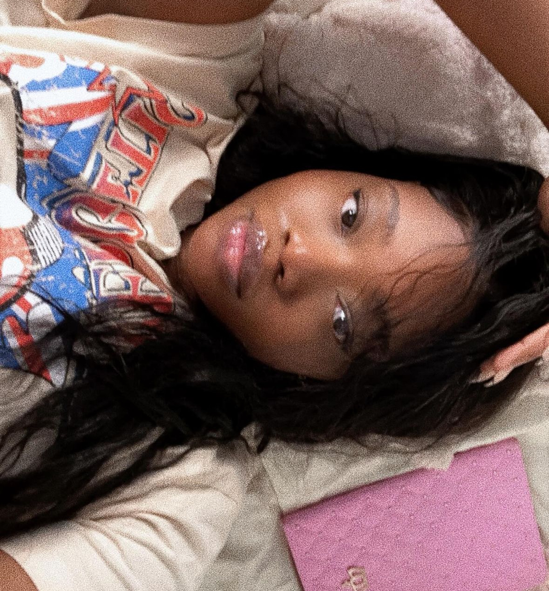

Sasha Olukanni| WDD130 Projects
Hi my major is computer science, my career choice is becoming a gaming software developer.
I love cooking, vlogging and spending time with my friends and family.
One davantages i see in unis class is making my own website which would gradually help me in my day to day life.
This course allows me to acquire valuable skills in creating user-friendly interfaces and enhancing digital experiences. I hope to gain proficiency in web development, both personally and professionally I have been a member of the church since I was a baby.
My hobbies are ice fishing and basketball.